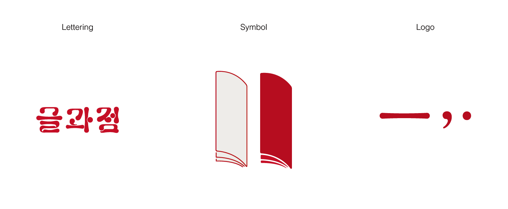

___
하나의 단락이 구성될 때, 문장을 완성하거나 각 문장을 연결하는 ‘점(dot)’과 '글(text)'은 서로 뗄 수 없는 관계에 놓여있다. 이에 따라 파생된 개념인 '글과 점(text and dot)' 을, '글과점(textery)' 의 공간으로 확장한다. '글과점(textery)' 은 단순히 이미지와 작업물을 보여주고 그치는 전시가 아닌, 작업물로부터 파생된 실제 디자인 제품들을 경험, 판매 및 구입할 수 있는 일종의 '상점' 과 같은 공간이다.
___
Opening Hours
2019/3/11 ~ 2019/3/16 10:00 - 18:00
___



‘기역기역’은 전시 기획 동아리로, 디자인 전공생 9인이 모여 전시, 워크숍, 월간지 발행 등 디자인과 관련된 다양한 활동을 기획합니다.
_2017.5.20.
1차 인디자인 워크숍(선배 초청)
_2017.5.24.
2차 인디자인 워크숍(선배 초청)
_2017.9.11~15.
서울대학교 아트스페이스
‘기역도둑’ 참여
_2018.3.11~17.
꺽쇠전
_2018.6.11~15.
기역기역 아카이브 전시
‘기역의 책, 기역의 영상’
_2018.9.27.
학생 전시 월간지
‘호다닥’ 1호 발행
_2018.10.31.
학생 전시 월간지
‘호다닥’ 2호 발행
_2018.12.6.
2018 SNU DESIGN WEEK
선물 포장 워크숍
‘래핑랩(Wrapping Lab)’